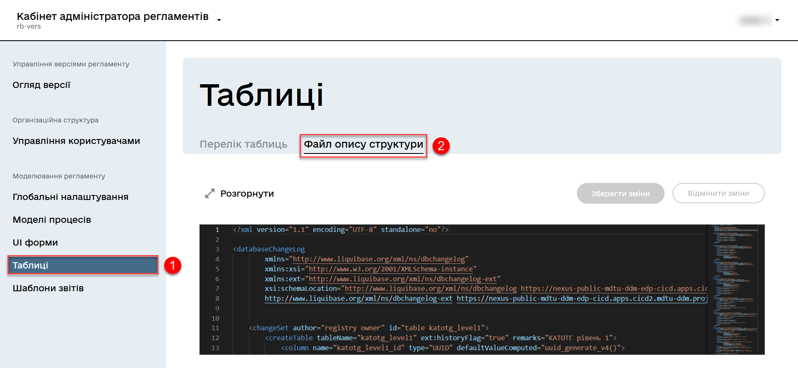
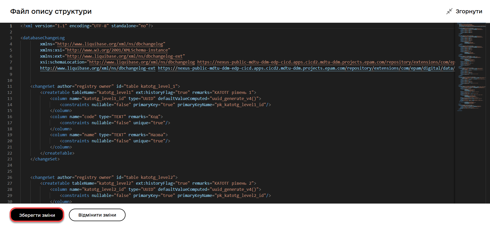
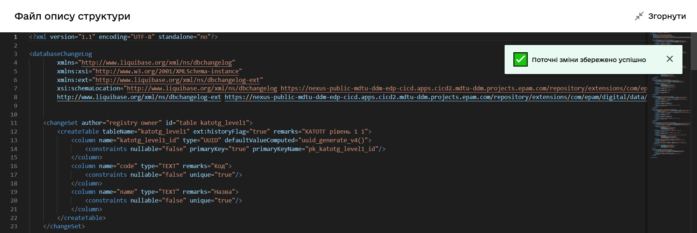
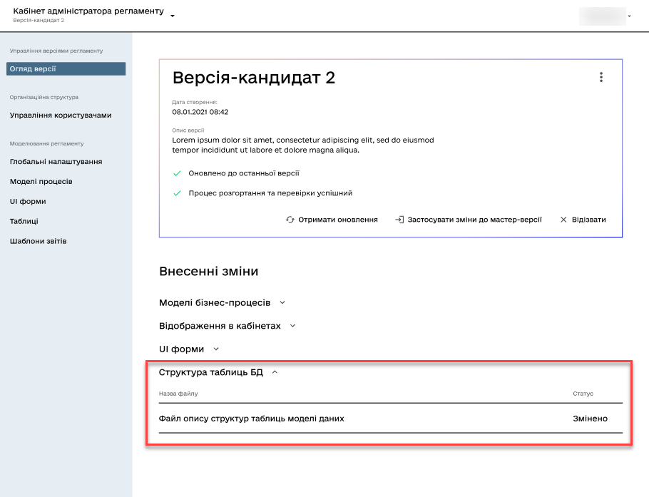
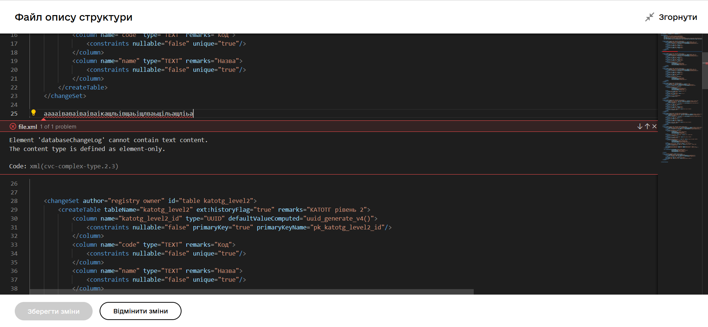
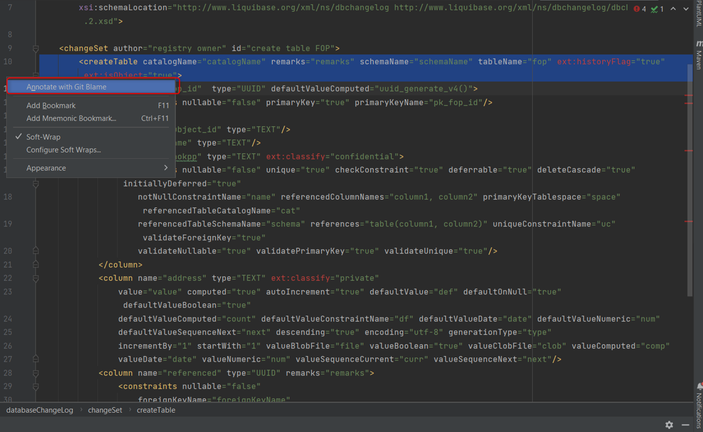
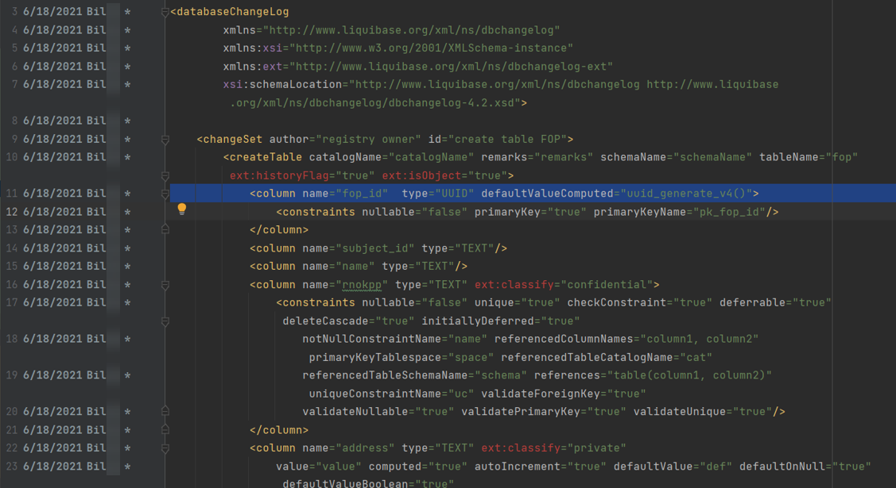

Modeling the structure of registry database tables in an XML code editor
1. General provisions
The administrative portal offers a built-in XML editor specialized in working with the table structure in the data-model/createTables.xml file, simplifying the data model management in the registry regulations. There are two approaches to creating and editing tables:
-
Working directly with the registry regulations files in Gerrit. In this case, there can be multiple files for different tables.
For more information on working with tables in the data model, refer to Керування таблицями.
-
Working through the XML editor in the administrative portal. Changes made here, after being applied to the master branch of the registry-regulations repository, only affect one file - data-model/createTables.xml.
In this case, it is necessary to follow the following recommendations:
-
All operations related to creating or modifying the structure of database tables should be saved in the data-model/createTables.xml file. This ensures proper organization of data structure and facilitates work with them.
-
The data-model/createTables.xml file should be explicitly included in the list of deployment files in the data-model/main-liquibase.xml configuration. This guarantees that changes in database table structures are correctly accounted for during system deployment.
By adhering to these recommendations, you can ensure efficient work with table structures and ensure the correctness of database deployment in your registry.
-
You can choose which approach to use for creating and editing tables. If you choose to work with the administrative portal through the built-in XML editor, for easier handling of table structures in the createTables.xml file, the Monaco Editor solution has been implemented, visualized with the Visual Studio Dark theme. This allows for quick and convenient changes through a unified interface and reduces the number of errors, ensuring a more productive data model management process.
One advantage of this editor is syntax code analysis, which provides notifications about syntax errors, if any occur. Additionally, the editor provides suggestions and enables auto-completion, simplifying the process of adding new tables to the data model.
2. Usage scenarios
-
Convenient editing of data structure in the registry regulations model using a simple editing window.
-
Automatic saving of changes made to the candidate version of the regulations, facilitating efficient editing process.
-
Display of error messages in the table structure editing window of the registry regulations data model, aiding in quick error detection and correction.
-
Provision of auto-suggestions and auto-completion while editing
liquibase changelog xml, simplifying the editing process and preventing errors. -
Verification of liquibase configuration according to liquibase and DDM xsd, helping configure the configuration correctly and avoid issues.
3. Functional capabilities
3.1. General usage process
Use the visual code editor to create and edit tables in the registry data model using XML tags.
|
Editing registry regulations components is only possible within change candidate versions. For the master version, only the viewing option is available. For more information on working with regulation versions, refer to Managing registry regulations versions. |
-
In the Regulations administrator portal open the Tables section.
You can find the Regulations administrator portal at
https://admin-tools-<назва-реєстру>.apps.envone.dev.registry.eua.gov.ua/.
-
Within the change candidate version, open the Structure description file tab and expand the visual editor in full-screen mode by clicking on
Expand. -
Make the necessary changes to the data model and click Save Changes.
For more information on working with the registry data model, refer to Creating a physical data model. 
You will receive a corresponding notification indicating that the changes have been saved.

Cancel the changes by clicking Cancel changes. When you click this button, you will receive the following warning message with options for proceeding:
Are you sure you want to cancel the changes?If you have made changes to the file but have not saved them and want to exit the editing window, you will receive the following message:
The structure description file has been modified. If you leave the page now, unsaved changes will be discarded.The Save changes button is disabled if the structure description file contains errors detected during code analysis and liquibase configuration according to liquibase and DDM xsd (for more details, see Code syntax analysis, hints, and auto-completion) -
Go to the Version overview section and verify that the changes in the file have been added to the list of changes in your change candidate version with the corresponding status.
If changes have been made to the data-model/createTables.xml file through the administrative portal or directly by adding a patch set to Gerrit in the corresponding merge request for the change candidate version, the Structure the database tables section will be displayed on the Version overview page under Latest changes. 
-
Apply the changes to the master version of the regulation.
For more information, see Reviewing metadata and managing the candidate version settings.
Error handling during the processing of the data model description file.
|
3.2. Code syntax analysis, hints, and auto-completion
The built-in code syntax analyzer in the Monaco editor offers advantages specific to working with XML markup:
-
XML syntax highlighting: The Monaco editor highlights the relevant elements of an XML file, such as tags, attributes, and text content. This makes it easier to read and edit XML files.
-
Auto-completion of XML tags: The Monaco editor provides auto-completion for closing tags based on open tags. It also offers auto-completion for
<changeSet>tags and their contents. Additionally, it suggests auto-completion for standard and non-standard (extended) Liquibase tags and attributes, promoting proper XML file structure and reducing the risk of errors.For more information on available tags for building a data model, refer to Standard Liquibase tags for data modeling and Liquibase extensions for data modeling respectively.
-
XML validation: The syntax analyzer checks the correctness of the XML structure in real-time, detecting incorrect or missing tags and attributes. This allows for quick error correction.

|
The code syntax analyzer functions are based on the rules established in the XSD for editing Liquibase XML documents. The corresponding XSD files are stored in the Nexus artifact repository of the Platform. To use auto-suggestions, auto-completion, and code analysis according to the Please contact the platform administrator for the links to the schemas. |
4. Integration of database table structures from various rule files for display in the administrative portal
This section will help you integrate the structure of database tables from different rule files to display them in the Regulations administrator portal. The goal is to gather all database table structures in one file, createTables.xml.
-
Analysing regulations files
Review the files in the data-model directory, such as createTables.xml, tablesCommon.xml, tablesKatottg.xml, etc., which contain sets of changesets with tables and their attributes.
-
Transferring table structures to the createTables.xml file
-
Identify all changesets related to the structure of the database tables in the different regulations files.
-
Transfer these changesets to the createTables.xml file in chronological order.
-
-
Determining the creation date of a changeset
To find the creation date of a changeset, use the
Annotate with Git Blamefunction in IntelliJ IDEA (or any other development environment):-
Right-click on the left column with line numbers in the file.
-
Select the
Annotate with Git Blameoption.
-
After that, the left column will expand, and next to each line number, you will see the date of the last update and the author of that line.

-
-
Checking the results in the Regulations administrator portal.
After completing the previous steps, open the administrative portal and navigate to the Tables section > Structure description file. You should now see the entire structure of the database tables collected from various rule files and displayed in the createTables.xml file.
| Please note that integrating the database table structure in one file is a recommendation to improve the visualization of data structure in the Regulations administrator portal. You can always continue developing the data structure directly in the administrative portal, considering your own requirements and limitations. |